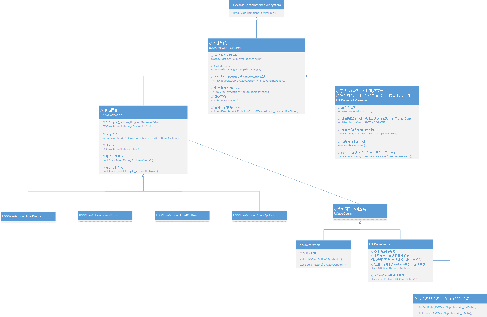

# 一、简介
- 存档是游戏的重要功能，尤其是单机游戏。虚幻的存档功能相当完善，只需要继承 USaveGame，然后将属性打上 UPROPERTY (SaveGame) 标签，
再调用 UGameplayStatics::AsyncSaveGameToSlot 就万事大吉了！真的如此吗？ - 对于单机游戏一般有多个存档，还有存档 UI 界面，而且当游戏功能越来越多，你就会感到上面的设计的乏力。
- 游戏存档很适合用备忘录模式。
# 二、备忘录模式
- 备忘录模式
- 备忘录模式保存一个对象的某个状态，以便在适当的时候恢复对象。备忘录模式属于行为型模式。
- 意图：在不破坏封装性的前提下，捕获一个对象的内部状态，并在该对象之外保存这个状态。
- 主要解决：所谓备忘录模式就是在不破坏封装的前提下，捕获一个对象的内部状态，并在该对象之外保存这个状态，这样可以在以后将对象恢复到原先保存的状态。
# 三、UML 类图
- 
# 三、详解
* 存档系统：
* 1. 读写存档数据
* 2. 跨关卡传输数据
*
*
* 相关对象：
* 存档数据: UXXSaveGame、UXXSaveOption
* Slot管理: UXXSaveSlotManager
* 存档操作: SaveAction
*
*
* 备忘录设计模式:
* Originator: 数据来源 - 游戏里面的各个系统、游戏状态、玩家状态等
* Memento: 游戏数据 - UXXSaveGame/UXXSaveOption
* CareTaker: UXXSaveGameSystem + UXXSaveSlotManager -> 管理数据存储的仓库
调用哪个 API 执行存档？只需要简单的调用 UXXSaveGameSystem::AddSaveAction 即可。
// 自动存档 void UXXSaveGameSystem::AutoSaveGame( ) { AddSaveAction( UXXSaveAction_SaveGame::StaticClass() ); }Action 里面的异步？
- UE4 有存档异步相关的 API，如下 “四” UGameplayStatics 中 API 所示。
- 如果其他引擎没有这类 API，大可自己实现。其实就是多线程任务，从线程池里面去一个线程去执行该任务。
- 读写存档（操作文件）最好异步操作，不然会占用很多主线程时间。
存档 UI 界面、跨关卡传输数据和 Option 还没实现，后续补全！
# 四、引擎相关
API
Kismet\GameplayStatics.h // 创建指定类型的存档，其实里面就是个NewObject USaveGame* UGameplayStatics::CreateSaveGameObject // 异步加载和保存函数 UGameplayStatics::AsyncSaveGameToSlot UGameplayStatics::AsyncLoadGameFromSlot // 同步加载和保存函数 UGameplayStatics::SaveGameToSlot UGameplayStatics::LoadGameFromSlot // 将存档转为TArray<uint8>& 或 将TArray<uint8>&转为存档 // 上面的四个函数都会调用这两个函数，转一下数据 USaveGame* UGameplayStatics::LoadGameFromMemory(const TArray<uint8>& InSaveData) bool UGameplayStatics::SaveGameToMemory(USaveGame* SaveGameObject, TArray<uint8>& OutSaveData); // 是否存在该存档 UGameplayStatics::DoesSaveGameExist ...跨平台 - 接口 ISaveGameSystem
- 处理平台差异。
- 只接受 TArray<uint8>& _data 作为读写数据（上面 UGameplayStatics 有函数可以转）。、
USaveGame
- 只是个空壳！用于区分存档对象和普通 Object。